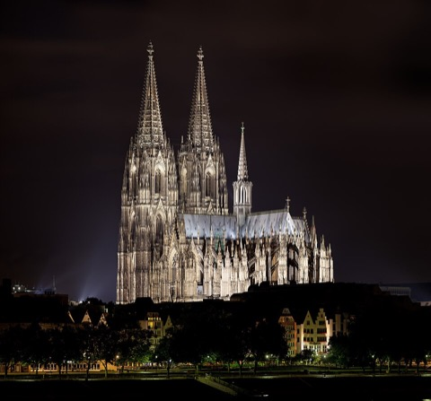

ドイツ旅行 2026
9/21月曜 · 移動日
ケルン経由でハイデルベルクへ
ノートの「4h46 €61.99 6:59→11:45」は ICE 1521 の直通便で、DB の時刻表と一致しました。ケルンで3時間過ごしてから IC でハイデルベルクへ。
予約済み・決定済み
- 06:59 ICE 1521 Schwerin Hbf 3番線 → 11:45 Köln Hbf 9番線（直通 4h46、€54.99〜、ノートでは €61.99）
- 14:53 IC 2046 Köln Hbf 7番線 → 17:34 Heidelberg Hbf 8番線（直通 2h41、€31.99〜）
- 宿泊：ハイデルベルク（ホテル名はノートに記載なし。予約確認メールを確認）
| 区間 | 発 | 乗換 | 着 | 料金 | メモ |
|---|
| Schwerin → Köln 決定 | 06:59 ICE 1521 · 3番線 | 直通 | 11:45 9番線 D-G | €54.99〜 | Hamburg・Bremen・Dortmund 経由。混雑予想。座席指定を付ける |
| Schwerin → Köln 予備 | 07:55 ICE 585 | Hannover 17分 | 13:15 | €95.99〜 | 寝坊した場合 |
| Köln → Heidelberg 本命 | 14:53 IC 2046 · 7番線 | 直通 | 17:34 8番線 | €31.99〜 | ライン川沿いを走る景色のよい区間 |
| Köln → Heidelberg 速い | 14:56 ICE 109 | Mannheim 9分 → RE | 16:48 | €67.99〜 | 45分早いが倍の値段 |
| Köln → Heidelberg 遅め | 15:54 ICE 611 | Mannheim → S3 | 17:45 | €57.99〜 | ケルンにもう1時間 |
タイムライン
- 06:15ホテル発。駅まで徒歩3分。朝食は前夜に頼んで持ち帰りにするか、駅のパン屋（早朝営業）
- 06:59Schwerin Hbf 3番線から ICE 1521。Hamburg Hbf（07:5x）で多くの人が乗ってくるので、荷物は座席上か車端の荷物棚に。車内販売あり
- 11:45Köln Hbf 9番線着。ホームから駅正面に出ると目の前が大聖堂（徒歩2分）
- 11:50荷物を駅のロッカーへ。A通路（1番線への階段横）に24時間のロッカー、€6/24h。D通路には自動預け入れ機もある
- 12:05ケルン大聖堂。2026年7月から観光での入場は €12（塔と宝物館を含む）。塔は533段、上まで約20分。宝物館 10–18時。ミサ中は見学不可
- 13:20昼食。大聖堂の南側「Früh am Dom」でケルシュ（0.2L グラスで次々来る。やめるときはコースターをグラスに乗せる）
- 14:15ホーエンツォレルン橋（南京錠の橋）を途中まで歩いて大聖堂と駅を対岸側から撮る。10分
- 14:35ロッカーから荷物を出して 7番線へ
- 14:53IC 2046 発。Bonn → Koblenz → Mainz → Mannheim。Koblenz〜Mainz はライン渓谷（世界遺産）、進行方向右側の席が川側
- 17:34Heidelberg Hbf 8番線着。ホテルへ。旧市街のホテルなら駅前からバス 33（Rathaus/Bergbahn 行き）またはタクシー約€15
- 19:00夕方のアルテ・ブリュッケ（古い橋）から城を見る。日没19:20頃。夕食は Hauptstraße 周辺
ケルン大聖堂 Kölner Dom

- 料金
- 2026年7月から観光客は €12（内部・塔・宝物館を含む）。13歳以下無料
- 時間
- 公式：観光での見学は平日 10:00–17:45（最終入場 17:30）、日曜・祝日 13:30–16:30。9/21 は月曜なので平日扱い。塔は 3〜10月 9:00–18:00。宝物館 10–18時、最終入場 17:30
- 写真
- フラッシュなしで可
- 荷物
- 大きな荷物は持ち込み不可。駅のロッカーに
乗り換えの詳細 Köln Hbf
- 構造
- ホームは高架、駅舎は地上。1〜11番線がすべて並行。9番線から7番線へは階段を下りて隣、3分
- ロッカー
- A通路（Passage A）、1番線への階段の横。硬貨またはカード
- Heidelberg 側
- 8番線着。駅は旧市街から2km離れている。バス 33 は駅前（Hauptbahnhof 北側）から20分間隔
公式サイトの確認（9/12 時点）
各施設の公式サイトで休止・改修・臨時休業の有無を確認した結果です。出発直前にもう一度、各リンク先を見てください。
| スポット | 状態 | 内容 |
|---|
| ケルン大聖堂 見学時間 | 営業 | 公式で再確認：平日 10:00–17:45（最終入場 17:30）、日曜・祝日 13:30–16:30。9/21 は月曜なので平日扱いで問題なし |
| ケルン大聖堂 | 注意 | 公式：2026年7月1日から有料（€12、塔・宝物館込み）、オンライン予約可。入場時に持ち物検査。持込できる鞄は 40×35×15cm まで、キャリーケース不可、大聖堂に荷物預かりなし。駅のロッカー（A通路、€6/24h）を必ず使う |
| 大聖堂の塔 | 営業 | 2025年10月に一時的な時間短縮があったが現在は通常。北塔の改修工事で大聖堂前広場に一部立入禁止区域あり |
| ライン渓谷（車窓） | 営業 | IC 2046 は Koblenz〜Mainz を左岸線で走る。進行方向右側が川 |
写真のルール（共通） 教会・レジデンツはいずれも個人利用の撮影可、フラッシュ・三脚・自撮り棒は不可。ミサや礼拝中は撮影も見学も控える。新市庁舎の塔とダニエル塔は撮影自由。
画像の出典
写真はすべて Wikimedia Commons の自由ライセンス作品です。アニメの画面は著作物のため掲載していません。
出典：DB 時刻表（2026/9/21 検索） · ケルン大聖堂 塔 · ケルン大聖堂 入場料 2026 · Köln Hbf ロッカー
{kind=link}